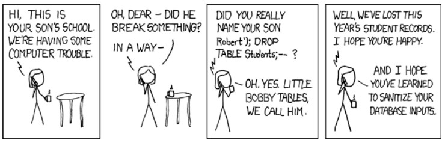

SQL Injektioner
SQL-injektioner är en av de vanligaste säkerhetsluckorna som förekommer i PHP. I huvudsak har inmatningsfältet på din webbplats som syfte att tillåta användare att skriva in information till din databas. Hackers utnyttjar den här funktionen genom att skriva in SQL-satser i sådana fält och därigenom få direktkontakt med databasen. Den här typen av hackningsteknik utnyttjar felaktig kodning av webbplatser genom att injicera SQL-kommandon i inmatningsfält. I stället för att ange ett lösenord vid inloggning kan man därför, om man har de kunskaper som krävs, i fältet för lösenord mata in en instruktion som gör att databasen antingen lämnar ifrån sig rätt lösenord eller tror att lösenordet redan är inmatat. En angripare kan även avsiktiligt bädda in en "DROP TABLE" uttalande som är instruktionen för att radera en tabell, vilket på så sätt kan vara förgörande för en databas. Denna säkerhetslucka förekommer i olika typer av databaser, eftersom SQL har varit de vanligaste har just den referensen till injektioner blivit det allmänna talesättet.
Exempel på en SQL injektion
Ett inloggningssystem skulle kunna ha följande SQL-fråga för att undersöka om ett lösenord är korrekt mot användarnamnet där man exempelvos hämtar $user och $password via $_POST:
$query = "SELECT * FROM users WHERE user = '" + $user + "' and password = '" + $password + "'";Med användarnamnet kalle och lösenordet abc123 skulle SQL-frågan bli:
SELECT * FROM users WHERE user = 'kalle' and password = 'abc123';Om en illasinnad användare som lösenord skriver in följande i inmatningsfältet för formuläret:
' OR '' = 'Så blir SQL-frågan följande:
SELECT * FROM users WHERE user = 'kalle' and password = '' OR '' = ''Jämförelsen längst till höger mellan två tomma strängar kommer alltid att leda till att resultatet blir sant, och användaren kommer alltid att loggas in.
Ett annat exempel på hur en hel tabell kan raderas genom att utöka med DROP som är kommandot för att radera en tabell.
Om följande text matas in i ett formulärfält som tar emot indata med $_POST och matas in i databasen.kalle; DROP TABLE usersIndatat skulle kunna bli. Instruktionen skulle leda till att tabellen users i databsen raderas.
SELECT * FROM users WHERE user = 'kalle'; DROP TABLE usersEn seriestripp om de försvunna tabellerna Bobby Tables :-) . Hämtat från denna sida.
Här finns en mer nogrann förklaring för dig som är intresserad :-)
Hur skyddar man sig mot SQL- injektioner?
SQL injektioner är alltså ett direkt resultat att inte ha filtrerat och ”escapat” data korrekt.Vi behöver rensa indata på farliga tecken som saboterar vårt SQL-anrop. Det gör vi genom att anropa en php-funktion som heter mysqli_real_escape_string(). Funktionen rensar textsträngen från speciella tecken så att det blir säkert att köra strängen i ett mysqli_query()-anrop.
$username = $_POST['username'];
$password= $_POST['password'];
$username = mysqli_real_escape_string($connection, $username);
$password = mysqli_real_escape_string($connection, $password);